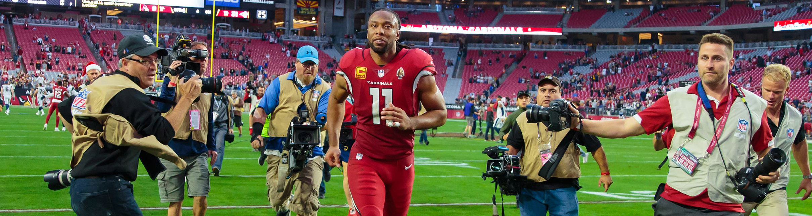
Cardinals Hall of Fame
Jim Thorpe
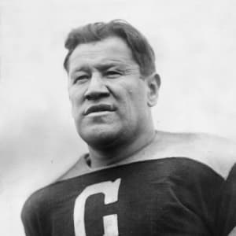
- Position: HB
- Years With Cardinals: 1928
- Pro Football HOF Induction: 1963
- First-team All-Pro: 1923
- 2× Consensus All-American: 1911, 1912
- NFL 1920s All-Decade Team
Marshall Goldberg - 99
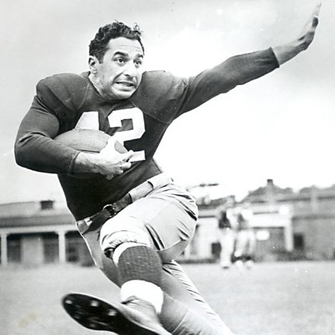
- Position: HB
- Years With Cardinals: 1939–1943, 1946–1948
- Number 42 Retired with Pittsburgh Panthers
- Number 99 Retired with Cardinals
- All American: 1937, 1938
- All-Pro: 1941
- Lieutenant in the US Navy: 1943-1945
Charley Trippi - 62, 2
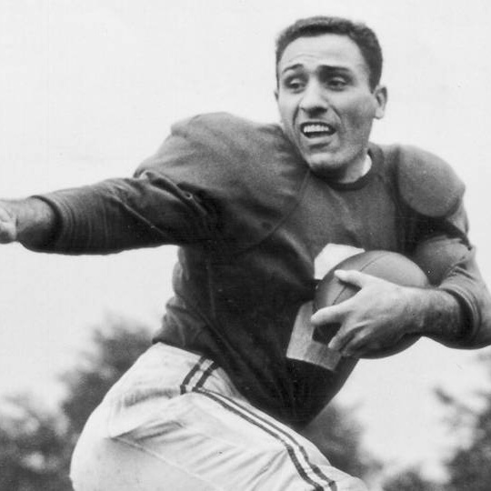
- Position: HB, QB
- Years With Cardinals: 1947-1955
- Pro Football HOF Induction: 1968
- Arizona Cardinals Ring of Honor
- Unanimous All-American: 1946
- NFL champion: 1947
- First-team All-Pro: 1948
- 2× Second-team All-Pro: 1947, 1952
- 2× Pro Bowl: 1952, 1953
- NFL 1940s All-Decade Team
Ollie Matson - 33
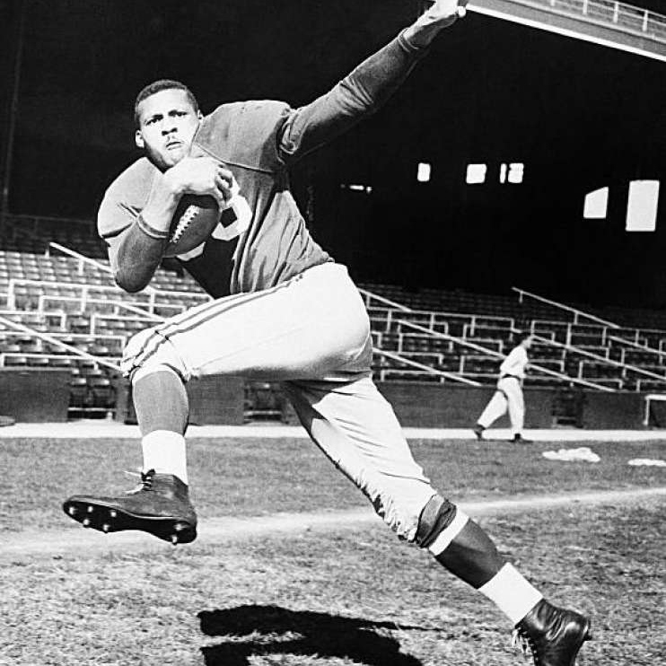
- Position: HB
- Years With Cardinals: 1952–1958
- Pro Football HOF Induction: 1972
- Arizona Cardinals Ring of Honor
- 7× First-team All-Pro: 1952, 1954–1959
- 6× Pro Bowl: 1952, 1954–1958
- NFL 1950s All-Decade Team
Dick "Night Train" Lane - 81
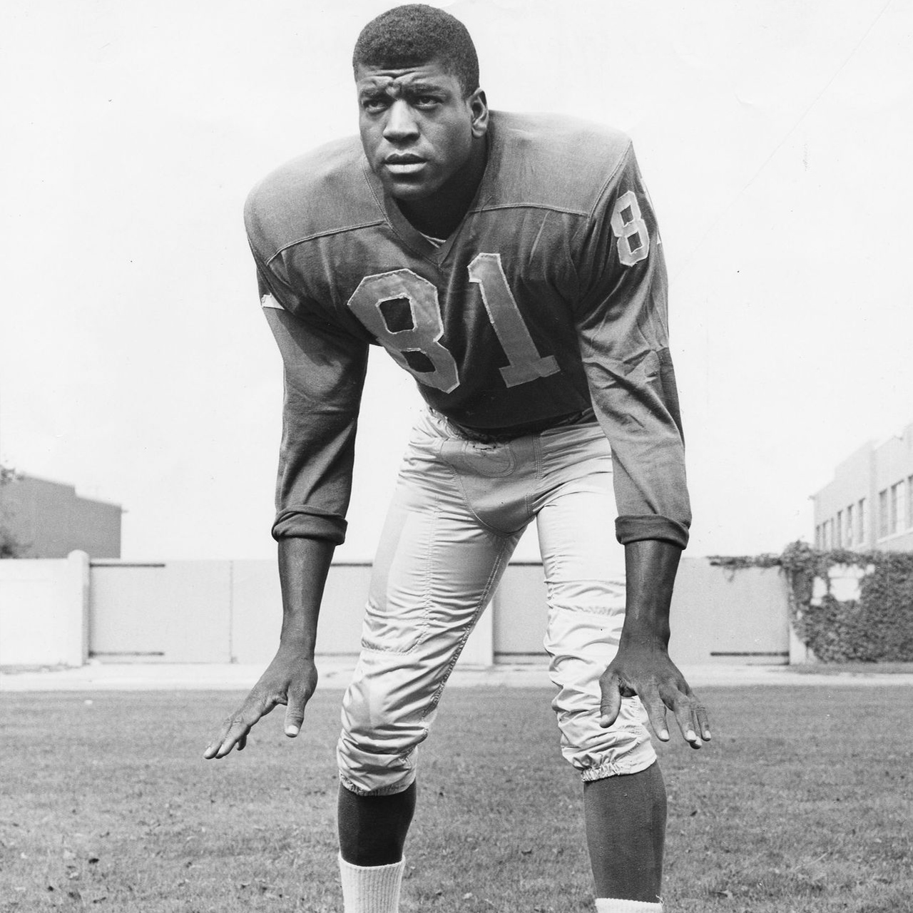
- Position: CB
- Years With Cardinals: 1954–1959
- Pro Football HOF Induction: 1974
- Arizona Cardinals Ring of Honor
- 7× First-team All-Pro: 1956-1957, 1959–1963
- 7× Pro Bowl: 1954-1956, 1958, 1960–1962
- 2× NFL Interceptions leader: 1952, 1954
- NFL record 14 interceptions in a season
- NFL 1950s All-Decade, 75th Anniversary Teams
Larry Wilson - 8
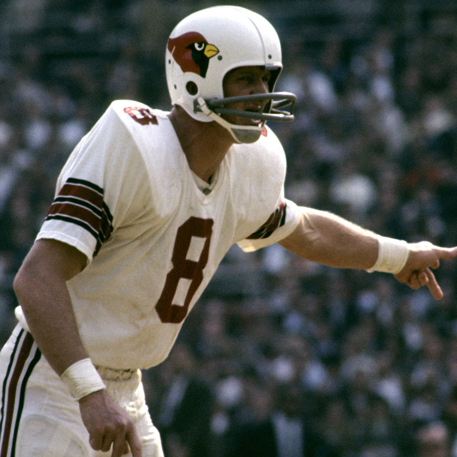
- Position: S
- Years With Cardinals: 1960-1972
- Pro Football HOF Induction: 1978
- Arizona Cardinals Ring of Honor
- Number 8 Retired with Cardinals
- 5× First-team All-Pro: 1963, 1966–1970
- 8× Pro Bowl: 1962, 1963, 1965–1970
- NFL Interceptions leader: 1965
- NFL Defensive Player of the Year
- NFL 1960s All-Decade, 75th Anniversary Teams
Jackie Smith - 81
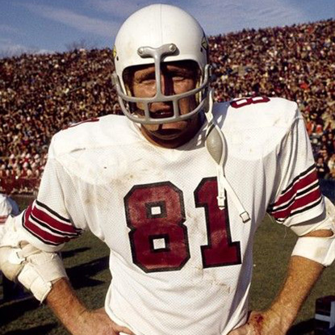
- Position: TE
- Years With Cardinals: 1963-1977
- Pro Football HOF Induction: 1994
- 4× Second-team All-Pro: 1966–1969
- 5× Pro Bowl: 1966–1970
Roger Wehrli - 22
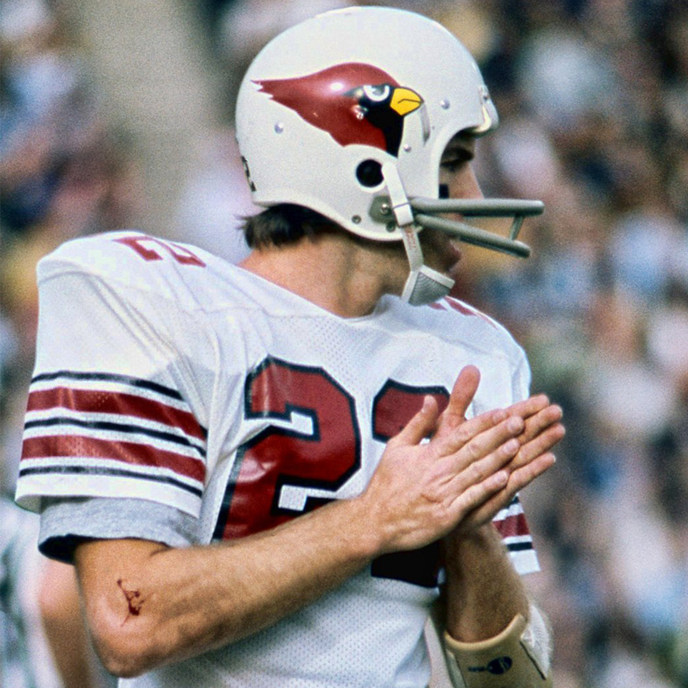
- Position: CB
- Years With Cardinals: 1969-1982
- Pro Football HOF Induction: 2007
- Arizona Cardinals Ring of Honor
- Consensus All-American: 1968
- 5× First-team All-Pro: 1970, 1974–1977
- Second-team All-Pro: 1971
- 7× Pro Bowl: 1970, 1971, 1974–1977, 1979
- NFL 1970s All-Decade Team
Jim Hart - 7, 17
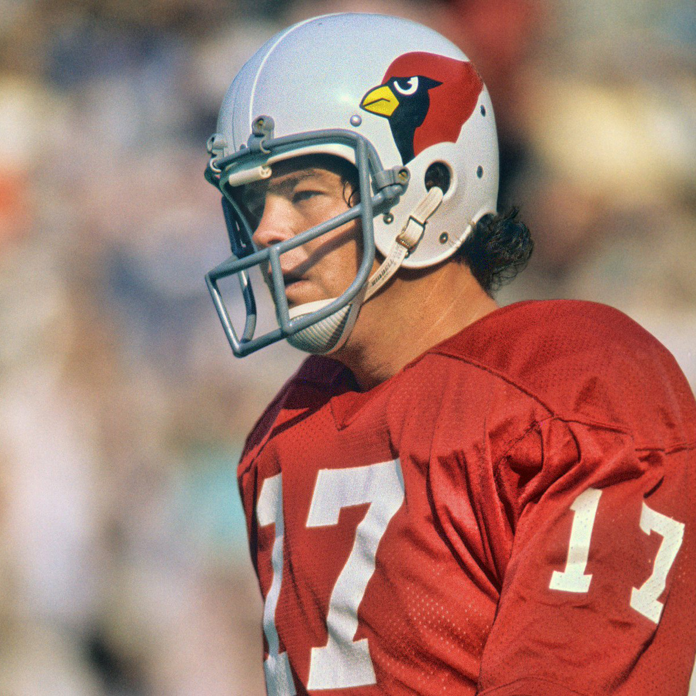
- Position: QB
- Years With Cardinals: 1966-1983
- Arizona Cardinals Ring of Honor
- Second-team All-Pro: 1974
- 4× Pro Bowl: 1974–1977
- NFC Offensive Player of the Year: 1974
- NFL Man of the Year: 1975
- Arizona Cardinals career leader in passing yards and passing touchdowns
Dan Dierdorf - 72
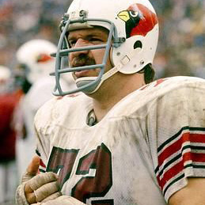
- Position: OT
- Years With Cardinals: 1971-1983
- Pro Football HOF Induction: 1996
- Arizona Cardinals Ring of Honor
- Consensus All-American: 1970
- 5× First-team All-Pro: 1975–1978, 1980
- Second-team All-Pro: 1974
- 6× Pro Bowl: 1974–1978, 1980
- NFL 1970s All-Decade Team
Roy Green - 25, 81
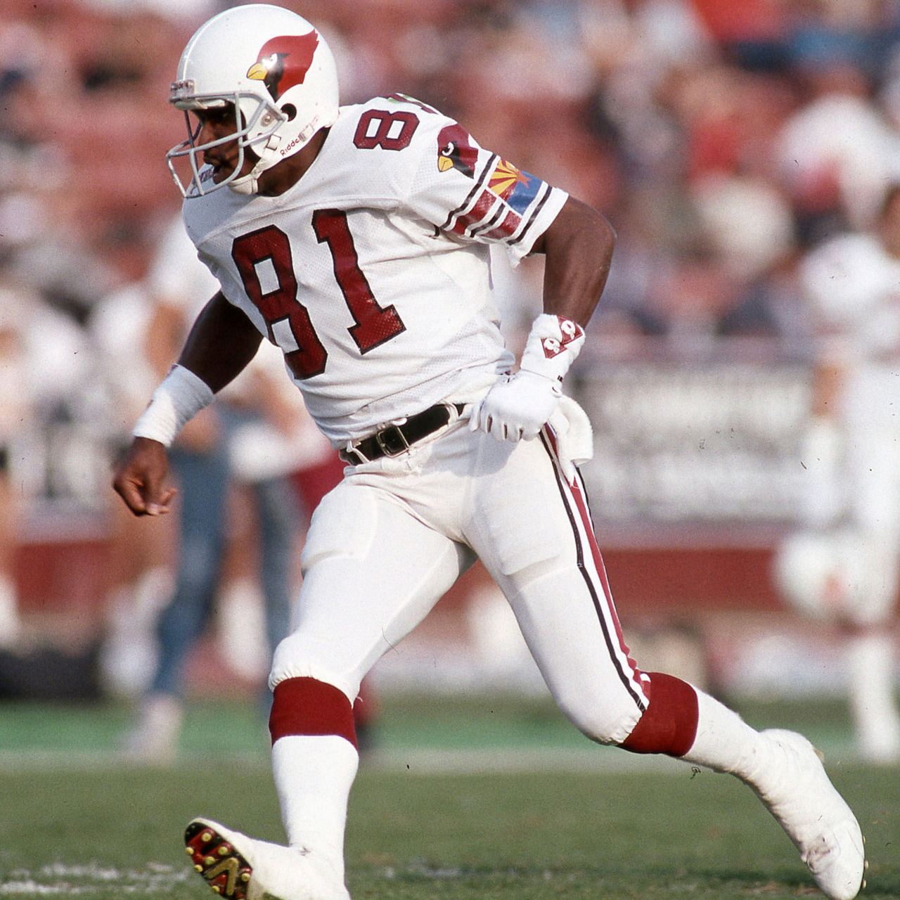
- Position: WR
- Years With Cardinals: 1979-1990
- Arizona Cardinals Ring of Honor
- 2× First-team All-Pro: 1983, 1984
- 2× Pro Bowl: 1983, 1984
- NFL receiving yards leader: 1984
Aeneas Williams - 35
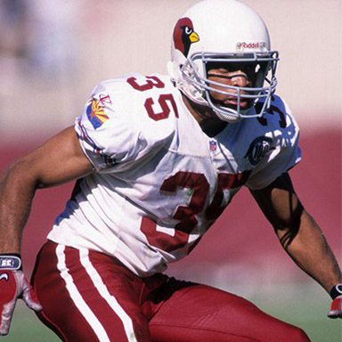
- Position: CB
- Years With Cardinals: 1991-2000
- Pro Football HOF Induction: 2014
- Arizona Cardinals Ring of Honor
- 4× First-team All-Pro: 1995-1997, 2001
- Second-team All-Pro: 1994
- 8× Pro Bowl: 1994-1999, 2001, 2003
- Bart Starr Man of the Year Award: 1999
- NFL 1990s All-Decade Team
Pat Tillman - 40
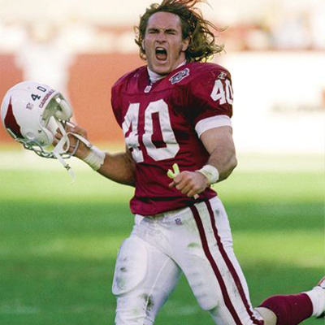
- Position: S
- Years With Cardinals: 1998–2001
- Arizona Cardinals Ring of Honor
- Number 42 Retired with Arizona State Sun Devils
- Number 40 Retired with Cardinals
- Corporal in the US Army: 2002-2004
- Awards: Sliver Star, Purple Heart, Meritorious Service Metal
- Arthur Ashe Courage Award: 2003
- Died in 2004 during the War in Afghanistan
Kurt Warner - 13
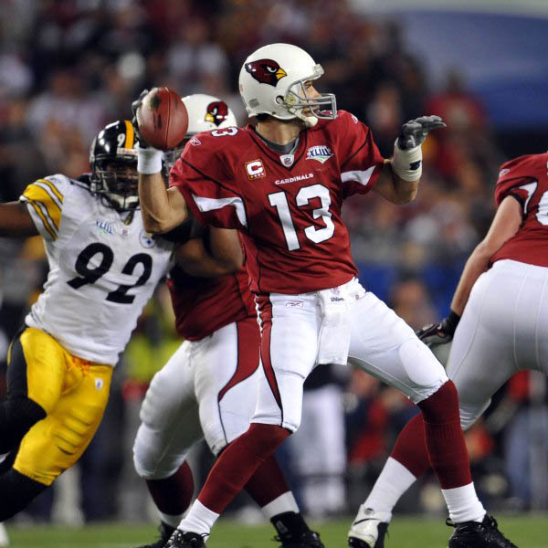
- Position: QB
- Years With Cardinals: 2005-2009
- Pro Football HOF Induction: 2017
- Arizona Cardinals Ring of Honor
- Super Bowl Champion and MVP: XXXIV
- 2× First-team All-Pro: 1999, 2001
- 4× Pro Bowl: 1999-2001, 2008
- NFL MVP: 1999, 2001, 2008
- NFL passing leader: 1999, 2001
- Walter Payton NFL Man of the Year: 2008
Adrian Wilson - 24
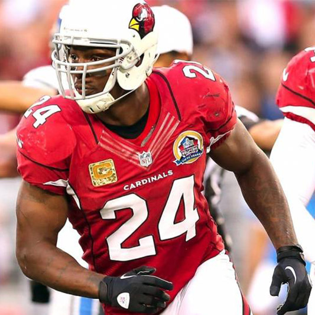
- Position: S
- Years With Cardinals: 2001-2012
- Arizona Cardinals Ring of Honor
- First-team All-Pro: 2009
- 2x Second-team All-Pro: 2006, 2008
- 5× Pro Bowl: 2006, 2008–2011
- 25 sacks/25 interceptions club
- NFL passing leader: 1999, 2001
Carson Palmer - 3
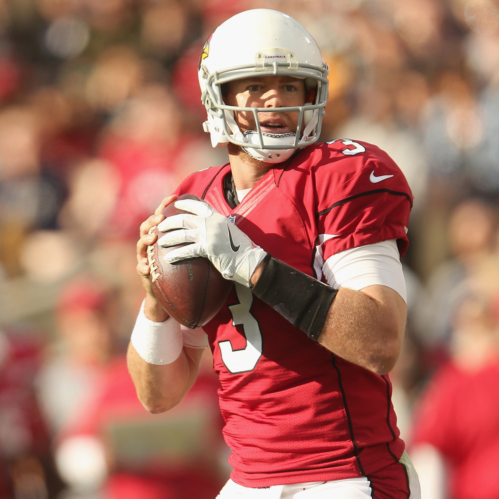
- Position: QB
- Heisman Trophy: 2002
- Consensus All-American: 2002
- Years With Cardinals: 2013-2017
- Second-team All-Pro: 2015
- 3× Pro Bowl: 2005, 2006, 2015
- Pro Bowl MVP: 2006
- NFL passing touchdown leader: 2005
Larry Fitzgerald - 11
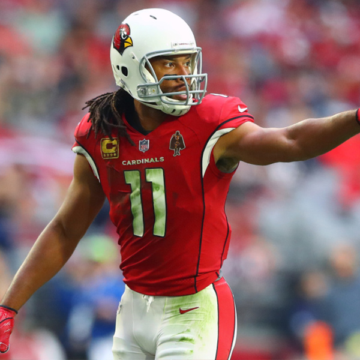
- Position: WR
- Years With Cardinals: 2004-Present
- Unanimous All-American: 2003
- Number 1 Retired with Pittsburgh Panthers
- First-team All-Pro: 2008
- 2x Second-team All-Pro: 2009, 2011
- 11× Pro Bowl: 2005, 2007-2013, 2015-2017
- Pro Bowl MVP: 2008
- 2x NFL receptions leader: 2005, 2016
- 2x NFL receeving touchdowns leader: 2008, 2009
- Walter Payton NFL Man of the Year: 2016